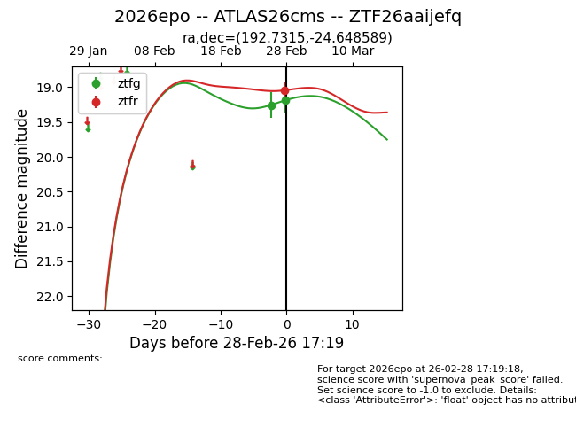
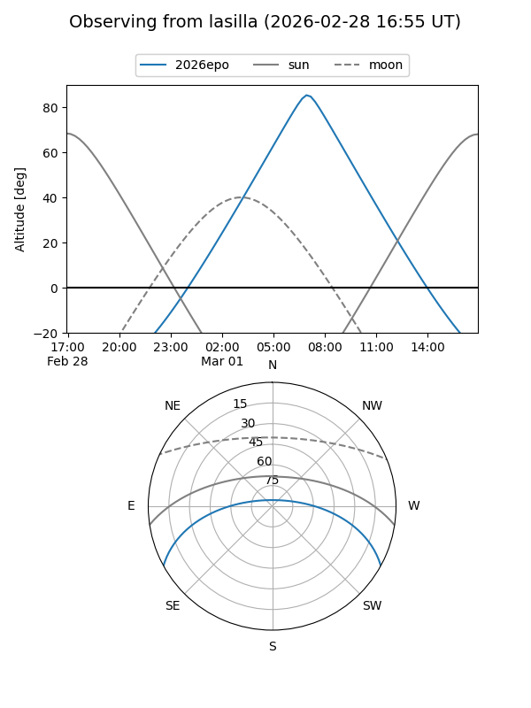
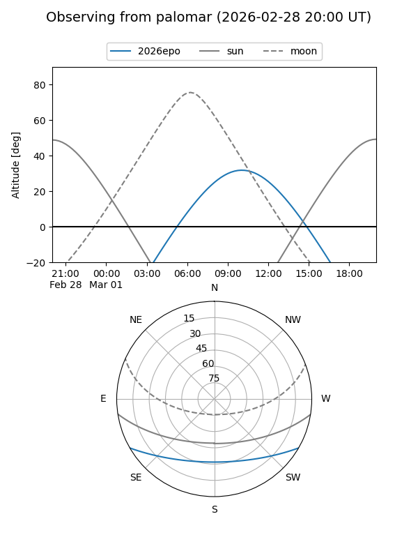
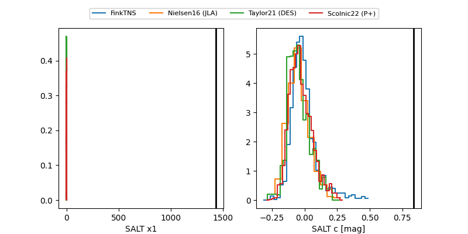

2026epo
Target 2026epo at 2026-02-28 17:20
Aliases and brokers:
FINK: link
Lasair: link
ALeRCE: link
TNS: link
YSE: link
alt names
ZTF26aaijefq (ztf,fink_ztf)
2026epo (tns,yse)
ATLAS26cms (atlas)
Coordinates:
equatorial (ra, dec) = 192.7315,-24.64859
equatorial (HMS+DMS) = 12:50:55.55,-24:38:54.92
galactic (l, b) = (302.7838,+38.22301)
Flags:
Photometry:
last ztfg=19.19, ztfr=19.04
2 ztfg, 1 ztfr detections
Lightcurve

Visibility


Additional plots
